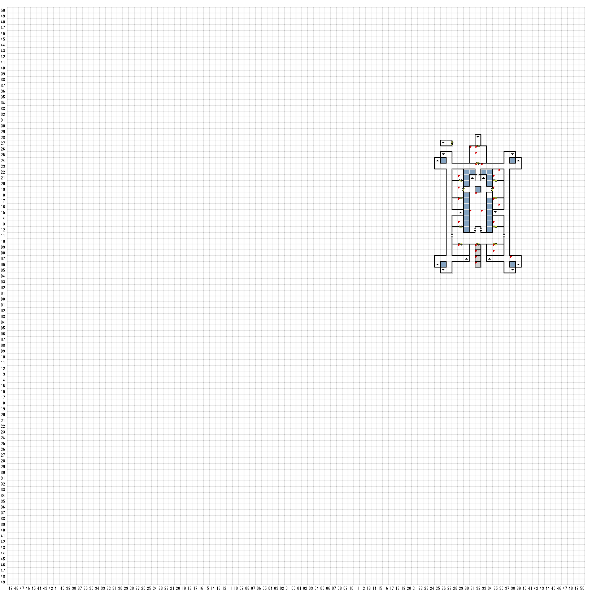

【 東：29，北：21 】
古い意志のかまど、崩れ落ちた棚。
この調理場では、昔は王室の饗宴の支度が
行われていたのであろう。
しかし、今やその部屋で腕をふるうのは”時間”、
そして料理されるのは部屋そのものなのである。
【 東：29，北：19 】
大ホールの荘厳な輝きは、
当の昔にこの部屋から消え去っていた。
50人もの人々が並べそうなほどのディナーテーブルも、
今や床の上に崩れ落ちた
ぼろぼろの破片でしかなかった。
【 東：29，北：17 】
配膳室であったこの部屋の壁には
むき出しの石でできた棚が並んでいる。
【 東：29，北：13 】
おそらくは優雅な客間であったこの部屋も、
今は壊れた椅子の破片が残るだけのようであった。
【 東：29，北：9 】
部屋の家具はすっかり朽ち果て、
いまだに形をとどめているのは、
部屋中に散らばる腐った木材だけであった。
【 東：31，北：26 】
砕かれたガイコツの咽の骨の
あたりから奇妙な鍵が見つかった。
最後の瞬間にそれを飲み込んだの
かもしれない・・・
KEYofRAMM
【 東：31，北：15 】
その箱の金属の表面には、
次のような文字がしっかりと刻まれていた。
「これ最初に開けよ」
開ける
ワナは仕掛けられていなかった
箱の中にはいくつかの品物と、
次のように記されたスクロールが入っていた。
一たびの治療を二度
回復を三度
汝に一つの命、
与えること七度
【 東：32，北：25 】
古い骨の破片があたりに散らばっており、
地面には濃い赤色のしみがついていた。
【 東：32，北：23 】
勤務時間中
門の開放厳禁
【 東：32，北：18 】
誰が飲みますか？
リフレッシュしました
（スタミナ回復）
【 東：32，北：9 】
君達はその白の玄関ホールへと進んだ。そこには、だれか、
またはなにかが潜んでいるような気配はまったくなかった。
そして、厚いほこりの層が、まるで動物のように床を被っていた。
廊下の遥か彼方からは、なにかが動き回るかすかな物音が
聞こえる。君達は、ここでは自分たちこそが侵入者なのだ
ということを思い出した。
【 東：32，北：8 】
しかし、どうもそういうわけにはいかなくなったようだ。
【 東：32，北：7 】
もし、事態が手に負えないほど悲惨になりそうなら、
いつでも引き返してきて、ここから外へ逃げられる。
城門の前に立った君達はそう確信していた。
【 東：32，北：6 】
スタート地点
【 東：33，北：23 】
＜何かに気づいた＞
北の壁に左の門の開閉ボタンがある
【 東：33，北：15 】
その箱の金属の表面には、
次のような文字がしっかりと刻まれていた。
「これを二番目に開けよ」
開ける
ワナは仕掛けられていなかった
箱の中にはいくらかの金貨と、
剣と、次のように記されたスクロールが入っていた。
用心せよ
心の中の
狭き回廊を
SWORDofSTRIKING
【 東：35，北：21 】
ほかの部屋同様この部屋も荒れ果てていたが、
床から突き出している奇妙なでっぱりが、
この部屋に最近正体不明の
何かが出入りしたことを
示しているようであった。
【 東：35，北：19 】
壁には、シミのついた腐った織物の
断片がこびりついていた。遠い昔、そこには
この公の間の権威を誇らしげに示す、
色鮮やかなタペストリーがかかっていたのであろう。
昔日は見直の甘美な香りに包まれていた偉大なる玉座も、
今は部屋の上座で、容赦ない時の流れに責めさいなまれている。
まるで、自らの最後の言葉によって、
衰えることを命じられたかのように。
もし、この崩れ落ちた部屋の色あせた玉座に
下された、なんらかの裁きが残っているならば、
それはすでに形を成さないほど崩れた
高座の崩壊の山の中からかき集め
られなければならないだろう。
そして、それは不潔で悪臭を放ち、
もはや何の意味もなく、
涙ながらに奪い去られた栄光を語るに違いない。
【 東：35，北：17 】
王の私室であったこの部屋の床には、
崩れ落ちた机といくつかの椅子が転がっていた。
この部屋は、弁事、高価な代償の伴う
取引の場であったことは間違いないだろう。
【 東：35，北：13 】
今やカラッポのこの部屋には、
ほこりとクモの巣しか残っていなかった。
【 東：35，北：9 】
朽ち果てた家具が部屋中に知らばっていた。
そして部屋の真中あたりには、大きな木のテーブルの
残骸と思われるものが残っていた。
おそらく、昔ここは会議室かなにかだったのであろう。
【 東：35，北：8 】
宝箱（ワナあり）
DIRK 10
ARMOR SHIELD
MOD . STAMINA 2
SCROLL of DIRECTION
【 東：36，北：22 】
でっぱりのあたりを調べてみると、
床医師が持ち上がったあたりに
乾燥したオリーブが見つかった。
（それだけ？何も起こらない？？）
【 東：36，北：16 】
机の残骸を探っていると、何かが書き付けてある、
引き裂かれた古い羊皮紙が見つかった。
そこには
「牧師、およびその愛人を召喚
娘レベッカの売り渡し代金として
100GPを支払う・・・」
と記されており、羊皮紙のほかの部分は、
失われてしまったか読めなくなってしまっていた。
【 東：38，北：7 】
それほど遠くないあたりから、衣ずれか
なにかが羽ばたくような音が聞こえてきた。
たぶん、この城に吹き込む
風の仕業だろう・・・